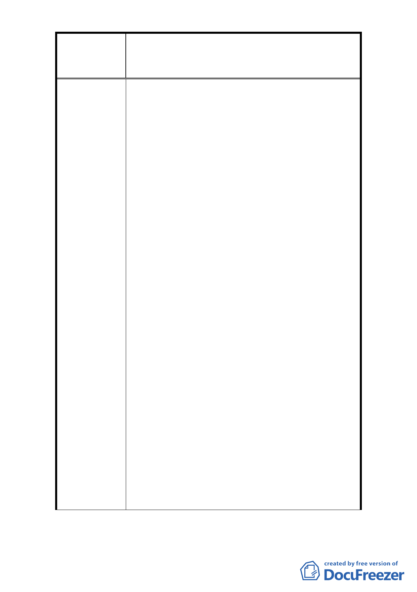

修訂臺北市大安區青田街保存區聚落風貌保存專用區細部計
案
名
畫、變更部分第三種住宅區、第三種商業區(特)為第三種住宅區
(特)(日式宿舍)及第三種商業區(特)(日式宿舍)暨劃定週邊地
區都市設計管制細部計畫案
1. 本計畫地區內含括 11 處文化資產，為維護本地區整
體歷史風貌，仍建議維持部分都市設計以及容積管
控機制，但本次修訂計畫將採回歸計畫範圍於幾處
核心區域，或是僅就文化資產周邊土地進行管制，
則仍需針對範圍以及管制機制進行討論。
2. 龍安里青田社區發展協會向本府申請指定該區 35 處
日式宿舍為古蹟，以整體保存本區日式宿舍群落風
貌。本府文化局業於 93 年起依文資法及相關法令邀
請文資委員進行本區域之文資價值鑑定，並於 95、
96 年公告 4 處古蹟、7 處歷史建築。
3. 日式宿舍納入細部計畫內則是在本市都市計畫委員
會於 96 年 2 月 13 日第 565 次委員會議中決議：「為
形塑整體街區保存與維護土地權利關係人權益，本
計畫案管制區內除以指定古蹟、已登錄歷史建築
外，增加日式 1 類可適用內政部頒訂都市計畫容積
移轉辦法」而將不具文資價值身分之日式宿舍納入
都市計畫管制範圍加以管制。
市 府 回 覆 意 見 4. 故青田街細部計畫範圍內之日式宿舍雖不受文化資
產保存法的管理，但是仍受到 96 年 8 月 9 日公告之
「修訂臺北市大安區青田街保存區聚落風貌保存專
用區細部計畫、變更部分第三種住宅區、第三種商
業區(特)為第住宅區(特)(日式宿舍)及第三種商業
區(特)(日式宿舍)暨劃定週邊地區都市設計管制細
部計畫案」之規範。細部計畫內針對日式宿舍之保
存與修復原則以及容積移轉機制均已詳加規定。目
前大稻埕歷史風貌專用特定區之歷史性建築亦是採
納入都市計畫方式予以保存。
5. 依現行臺北市都市計畫容積移轉審查許可條件第七
點規定（略以）：「接受基地之面積，應超過一千平
方公尺，且不得為下列土地：(一)古蹟所在及毗鄰
街廓，或歷史建築所在街廓。」
6. 新計畫並無修訂係考量建築基地毗鄰具保存價值基
地者，應維護整體保存場域所訂定之規範，並無公、
私有財分別。
- 42 -